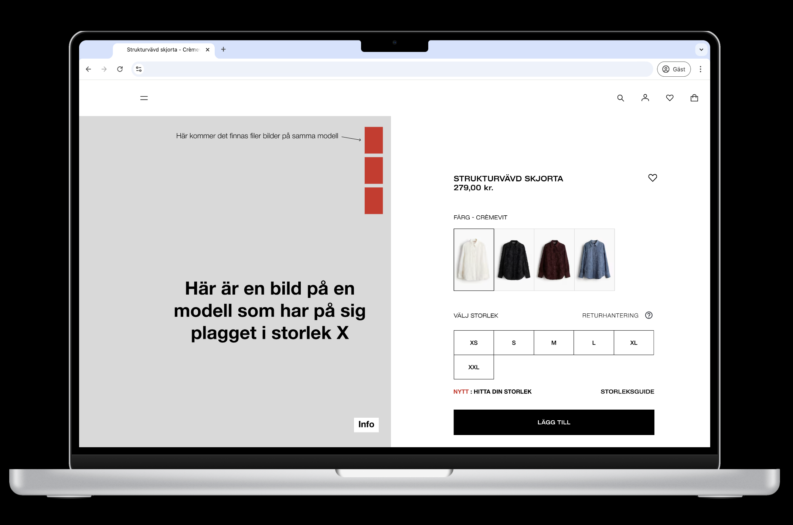

Welcome!

My name is Nisse — a UX Designer who simplifies complexity and delivers impactful solutions. Creative processes are my greatest passion.
My Expertise
I specialize in creating user-centered designs that enhance user
experience and drive engagement. My skills include user research,
wireframing, prototyping, and usability testing. CASE 4: Aireal Solutions Kund: Elva Group Work: Logo Design, UI Design Insikter: It-system, team, kundkontakt.  Case 1: Vi fick i uppdrag att undersöka konsument-beteenden i Klädbutiken för att minska svinn och skapa ett mer hållbart tänk hos människor när de handlar i Klädbutiken online.
Aireal
Klädbutiken


About me
Hello! My name is Nisse Lindberg, and I am in my second year studying to become a UX Designer at IT-Högskolan. Creative processes are one of my greatest passions in life. Now I get to be creative while also improving user experiences. I enjoy tackling challenges and collaborating with others to create impactful solutions. I design with purpose, always keeping the users in mind to create intuitive and meaningful experiences. I focus on creating the best solution for the user.
Services:
- User Research
- Usability Testing
- Wireframing
- Prototyping
- Accessible Design
Personal:
I am a 44-year-old parent of young children and a former musician from Gothenburg. I love working out, traveling, and playing music. Music is an important part of my life; it has given me many fun experiences, from touring Europa to Jokkmokk. My creative passion took off when I discovered my love for music. From that time onward, the guitar has become one of my closest friends. During my childhood, I used to play both hockey and in bands. Team sports have played a big role in my life, teaching me the value of teamwork and shaping me into the team player I am today.


More questions:
CONTACT